40 Protección, sostén y movimiento
842
E
n el capítulo 39 se describieron los tejidos, órganos y sistemas de órganos animales, estableciendo los cimientos para análisis más detallados en este capítulo y en los siguientes. Aquí el enfoque se centra en revestimientos epiteliales, esqueletos y músculos, estructuras que están estrechamente relacionadas con las funciones de protección, sostén y movimiento. En el estudio del reino animal (capítulos 30 a 32) se describieron muchas adaptaciones que implican estas estructuras. Por ejemplo, se analizó cómo el exoesqueleto artrópodo contribuye al gran éxito biológico de los insectos. En este capítulo se comparan estos sistemas en varios grupos animales y luego la atención se centra en su estructura y función en los mamíferos. Los revestimientos epiteliales de los animales protegen tejidos subyacentes y también tienen muchas otras funciones. Una de las más interesantes es la secreción de péptidos y otras sustancias que matan bacterias dañinas y ciertos agentes patógenos. Las ranas y los sapos, en particular, secretan una variedad de péptidos poderosos que los protegen contra bacterias dañinas, hongos y protozoos. Secreciones de la rana Rana ridibanda han demostrado matar “superbacterias”, como el MRSA ( Staphylococcus aureus resistente a la meticilina; consulte el capítulo 25). La piel de los anfi bios constituye una promisoria fuente potencial de nuevos antibióticos y otros medicamentos. La mayoría de los animales también están protegidos por un sistema óseo . Así se trate de un compartimiento lleno de fl uido, una concha o un sistema de huesos, el sistema óseo protege órganos internos y provee sos-
Saltamontes a medio salto. El saltamontes ( Tropidacris dux ) usa poderosos músculos en sus patas traseras para catapultarse hacia el aire. Los músculos del insecto se unen al exoesqueleto.
Stephen Dalton/NHPA
CONCEPTOS CLAVE
40.1 Muchas estructuras y procesos han evolucionado en los animales para protección, sostén y movimiento. Los revestimientos epiteliales están adaptados para proteger tejidos subyacentes y pueden especializarse en intercambio de gases, recepción sensorial, secreción u otras funciones. 40.2 Los sistemas esqueléticos, sean hidrostáticos, exoesqueletos o endoesqueletos, están adaptados para sostener y proteger el cuerpo y para transmitir fuerzas mecánicas importantes en el movimiento. 40.3 Los músculos están adaptados para contraerse; durante la contracción, la energía del ATP se usa para deslizar fi bras musculares, de manera que el músculo se acorte. Partes del cuerpo se mueven cuando los músculos tiran de ellas.
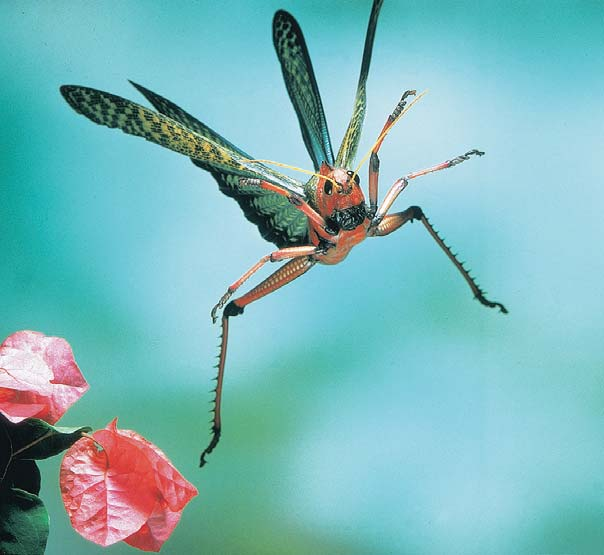
Protección, sostén y movimiento 843
tén para el cuerpo. El sistema óseo y el sistema muscular trabajan juntos para producir movimiento. El tejido muscular está especializado para contraerse. Aunque unos cuantos animales permanecen arraigados a un punto, barriendo su alrededor con tentáculos, la locomoción (movimiento de un sitio a otro en el entorno) es característica de la mayoría de los animales. Los músculos responsables de la locomoción están anclados al esqueleto, lo que les proporciona algo fi rme sobre lo cual actuar. En la mayoría de los vertebrados, los huesos sirven como palancas que transmiten la fuerza necesaria para mover varias partes del cuerpo. En el transcurso de la evolución, la mayoría de los animales han desarrollado adaptaciones para movimiento confi able, rápido y sensible. Los animales reptan, caminan, corren, saltan, nadan o vuelan (vea la fotografía). Estas adaptaciones les permiten encontrar alimentos y escapar de sus depredadores. En los animales complejos, el movimiento efectivo depende de la cooperación e interacciones de varios sistemas del cuerpo, incluyendo los sistemas muscular, óseo, nervioso, circulatorio, respiratorio y endocrino. Las interacciones reguladas de manera precisa entre tejidos, órganos y sistemas de órganos que hacen posibles funciones complejas y el mantenimiento de la homeostasis constituyen un ejemplo dinámico de la biología de sistemas en acción.
40.1 REVESTIMIENTOS EPITELIALES
OBJETIVOS DE APRENDIZAJE
1 Comparar las funciones de los revestimientos epiteliales de invertebrados y vertebrados. 2 Relacionar la estructura de la piel de los vertebrados con sus funciones.
El tejido epitelial cubre todas las superfi cies externas e internas del cuerpo animal. La estructura y las funciones del revestimiento epitelial externo están adaptadas al ambiente y estilo de vida de los animales. Tanto en invertebrados como en vertebrados, los revestimientos epiteliales protegen el cuerpo. Los revestimientos epiteliales también pueden estar especializados para secreción, intercambio de gases o regulación de la temperatura y suelen contener receptores que reciben señales sensoriales desde el entorno.
El epitelio de los invertebrados puede secretar una cutícula
En muchos invertebrados el epitelio externo está especializado para secretar capas protectoras o de sostén de material no vivo. En los insectos y muchos otros animales el material secretado constituye una cubierta exterior denominada cutícula . Algunos animales, incluidos corales y moluscos, secretan una concha formada principalmente de carbonato de calcio. En muchas especies el epitelio contiene células que secretan productos lubricantes o adhesivos. Estas células pueden liberar secreciones olorosas usadas para la comunicación o para marcar senderos. En otras especies, las células secretoras producen toxinas usadas para ataque o defensa. El epitelio de las lombrices de tierra secreta una mucosidad lubricante que promueve la difusión efi caz de gases a través de la pared corporal y reduce la fricción durante el movimiento por el suelo. Las células epiteliales pueden ser modifi cadas como células sensoriales que perciben la luz de manera selectiva y estímulos químicos o mecánicos, como el contacto o presión con un objeto.
La piel de los vertebrados funciona como protección y para regular la temperatura
El sistema integumentario de los vertebrados incluye la piel y estructuras que se desarrollan a partir de ella. En muchos peces, en algunos reptiles y en el pangolín hormiguero (un mamífero; vea la fi gura 18-15c) la piel se ha desarrollado en un conjunto de escamas sufi cientemente grandes para ser consideradas una armadura. Incluso la piel humana posee una resistencia considerable. La piel fi na y húmeda de muchos anfi bios está adaptada para el intercambio de gases, así como para la defensa. Los derivados de la piel difi eren bastante entre los vertebrados. Los peces poseen escamas óseas o semejantes a dientes. Los anfi bios tienen una piel desnuda cubierta con una mucosa y algunas especies están equipadas con glándulas venenosas. Los reptiles tienen escamas epidérmicas, los mamíferos tienen pelo y las aves tienen plumas que proporcionan aún más aislamiento efectivo que la piel. El plumaje de las aves y la piel de los mamíferos son estructuras aislantes que ayudan a mantener la temperatura corporal al preservar el calor en el cuerpo. La piel y sus derivados a menudo son de color brillante en conexión con rituales de cortejo, despliegues territoriales y otros tipos de comunicación. En los mamíferos, estructuras derivadas de la piel incluyen garras (modifi cadas como uñas de los dedos y de los pies en los primates) pelo, glándulas sudoríparas, glándulas sebáceas y varios tipos de receptores sensoriales que proporcionan a los mamíferos la capacidad de sentir presión, temperatura y dolor. La piel de los mamíferos también contiene glándulas mamarias, especializadas en las hembras para secretar leche. En humanos y otros mamíferos, las glándulas sebáceas se vacían por medio de ductos cortos hacia los folículos pilosos. Un folículo piloso es la parte de un cabello bajo la superfi cie de la piel, junto con el tejido epitelial circundante. Las glándulas sebáceas secretan sebo , una mezcla de grasas y ceras que inhibe el crecimiento de bacterias dañinas. Aunque la piel de los peces, las ranas, las serpientes, los pelícanos y los elefantes parece muy diferente, su estructura básica es la misma en todos los vertebrados. La capa externa de la piel, la epidermis , es una barrera protectora a prueba de agua. La epidermis consta de varios estratos o subcapas. La más profunda es el estrato basal y la más superfi cial es el estrato córneo ( FIGURA 40-1 ). Las células de pigmento en el estrato basal y en la dermis situada debajo producen melanina , un pigmento que contribuye al color de la piel. En el estrato basal las células se dividen y son empujadas hacia fuera a medida que abajo de éstas se producen otras. Las células epidérmicas maduran en la medida en que se mueven hacia la superfi cie de la piel. Mientras las células epidérmicas se mueven hacia la superfi cie del cuerpo producen queratina , una elaborada proteína enrollada que da a la piel resistencia mecánica y fl exibilidad considerables. La queratina es insoluble y funciona como una barrera de difusión para la superfi cie del cuerpo. A medida que las células epidérmicas se mueven a través del estrato córneo mueren. Cuando llegan a la superfi cie externa de la piel se desgastan y deben ser reemplazadas continuamente. Debajo de la epidermis está la dermis , un tejido conectivo denso y fi broso constituido principalmente por fi bras de colágeno (vea la fi gura 40-1). El colágeno proporciona resistencia y fl exibilidad a la piel. La dermis también contiene vasos sanguíneos que nutren a la piel y a los receptores sensoriales del tacto, dolor y temperatura. Los folículos pilosos y, en la mayoría de los mamíferos, las glándulas sudoríparas están incrustadas en la dermis. En las aves y los mamíferos la dermis se encuentra sobre una capa de tejido subcutáneo compuesto principalmente por tejido adiposo que aísla el cuerpo de temperaturas exteriores extremas.
844 Capítulo 40
40.2 SISTEMAS ÓSEOS
OBJETIVOS DE APRENDIZAJE
3 Comparar la estructura y las funciones de diferentes tipos de sistemas óseos, incluyendo el esqueleto hidrostático, el exoesqueleto y el endoesqueleto. 4 Describir las divisiones principales del esqueleto de los vertebrados y los huesos que forman cada división. 5 Describir la estructura de un hueso largo típico y diferenciar entre los desarrollos endocondrial e intramembranoso del hueso. 6 Comparar los tipos principales de articulaciones en los vertebrados.
Además de tener un revestimiento epitelial, muchos animales están protegidos con un sistema óseo que forma el armazón del cuerpo. El esqueleto también funciona para la locomoción. Los músculos suelen actuar sobre estructuras duras como quitina o hueso. Estas estructuras óseas transmiten y transforman fuerzas mecánicas generadas por contracción muscular en una variedad de movimientos que hacen los animales. La mayoría de los invertebrados tienen esqueletos hidrostáticos o exoesqueletos . (Tal vez recuerde del capítulo 32 que los equinodermos son una excepción). Los vertebrados tienen un endoesqueleto de cartílago o hueso.
En los esqueletos hidrostáticos los fl uidos corporales transmiten fuerza
Muchos invertebrados de cuerpo blando tienen esqueletos hidrostáticos hechos de compartimentos del cuerpo llenos con fl uido. Suponga un globo elongado lleno de agua. Si tira del globo, éste se estira y se vuelve más delgado. Hace lo mismo si lo aprieta. A la inversa, si empuja los extremos hacia el centro, el globo se acorta y se hace más grueso. Muchos invertebrados, incluidos los cnidarios, platelmintos, anélidos y las lom-
En los humanos, la exposición a radiación ultravioleta (UV), los cortos e invisibles rayos del Sol, hace que la epidermis engruese y estimule a las células de pigmento en la piel para producir melanina a un ritmo más rápido. La melanina es una pantalla protectora importante contra el Sol porque absorbe algo de los dañinos rayos UV. Un incremento en la melanina hace que la piel se vuelva oscura. El bronceado tan apreciado por los amantes del Sol es en realidad una señal de que la piel ha estado demasiado expuesta a la radiación UV. Cuando la melanina no puede absorber todos los rayos UV, la piel se infl ama o es quemada por el Sol. Las personas de piel oscura tienen más melanina, por lo que sufren menos de quemaduras solares, arrugas y cáncer de piel, aunque también requieren protección contra los rayos UV. La radiación UV daña el ADN, produciendo mutaciones que conducen a transformaciones malignas de las células (vea el capítulo 17). El cáncer de piel es el tipo de cáncer más común en los humanos, y la mayoría de los casos de este tipo de cáncer son ocasionados por exposición excesiva y crónica a la radiación UV. La incidencia de melanomas malignos , el tipo más letal de cáncer de piel, está aumentando más rápido que cualquier otro tipo de cáncer. En todo el mundo, el número de casos se ha duplicado en los últimos 20 años. Un mayor conocimiento de la vía de señalización de la célula Ras/ERK ha conducido a investigaciones dirigidas al desarrollo de medicamentos para el tratamiento de melanomas. (Recuerde del capítulo 6 que esta vía es la cascada de señalización principal para la división y diferenciación celular).
Repaso
■ ¿En qué se parecen los revestimientos del cuerpo de los invertebrados y los vertebrados?
■ ¿Cómo está relacionada la estructura de la piel de los vertebrados con sus funciones específicas?
■ ¿Qué propiedades proporciona la queratina a la piel humana?
■ ¿Cuál es la función de la melanina?
Aberturas de las glándulas sudoríparas Capilar Terminaciones nerviosas
Estrato córneo
Estrato basal
Epidermis
Dermis
Tejido subcutáneo
Arteria Vena
Glándula sudorípara Glándula sebácea
Folículo piloso
Tejido adiposo
Receptor sensorial
Tallo del pelo
Músculo erector del pelo
Célula de pigmento (melanocito)
FIGURA 40-1 Animada Sistema integumentario humano El sistema integumentario de los humanos y otros mamíferos es un sistema de órganos complejo que consta de piel y estructuras como cabello y uñas que se derivan de la piel. El estrato basal consta de una sola capa de células epiteliales que se dividen.
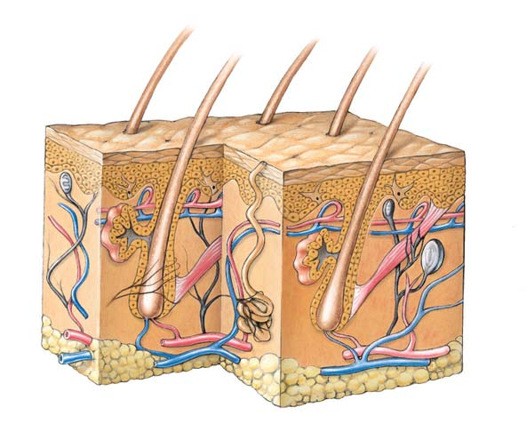
Protección, sostén y movimiento 845
El esqueleto hidrostático más sofi sticado de los gusanos anélidos les permite moverse con más fl exibilidad. El cuerpo de una lombriz de tierra consta de una serie de segmentos divididos por particiones transversales o septos (vea la fi gura 31-19). Los septos aíslan porciones de la cavidad del cuerpo y el fl uido celómico que contiene. Esta disposición permite que los esqueletos hidrostáticos de cada segmento sean bastante independientes entre sí. Por tanto, la contracción del músculo circular en el extremo anterior que se elonga no interfi ere con la acción del músculo longitudinal en el segmento ubicado en el extremo posterior. Es posible encontrar algunos ejemplos de esqueletos hidrostáticos en invertebrados equipados con conchas o endoesqueletos, e inclusive en vertebrados con endoesqueletos de cartílago o hueso. Por ejemplo, las estrellas de mar y los erizos de mar poseen un endoesqueleto, aunque mueven sus patas tubulares por medio de una ingeniosa adaptación de un esqueleto hidrostático (vea el capítulo 32). Y el pene humano se erecta y pone rígido debido a la turgencia de la sangre a presión presente en sus espacios interiores.
Los moluscos y artrópodos poseen exoesqueletos no vivos
En la mayoría de los animales, el esqueleto es una concha sin vida, o exoesqueleto , depositada sobre el revestimiento epitelial externo. En los moluscos, el exoesqueleto es una concha de carbonato de calcio secretado por el manto, una lámina delgada de tejido epitelial que se extiende desde la pared del cuerpo. El exoesqueleto proporciona protección, un refugio usado en emergencias, con la mayor parte del cuerpo desnudo y expuesto en otras ocasiones. Los exoesqueletos de los artrópodos no sólo sirven como protección sino también para transmitir fuerzas. En este sentido son comparables con los esqueletos de los vertebrados. El exoesqueleto artrópodo es una cutícula inerte que contiene el polisacárido quitina . Aunque es una pieza continua que cubre todo el cuerpo, el exoesqueleto artrópodo varía bastante en grosor y fl exibilidad. Grandes placas gruesas y rígidas están separadas entre sí por articulaciones delgadas y fl exibles dispuestas por segmentos. Hay sufi cientes articulaciones para que el cuerpo del artrópodo sea tan fl exible como el de muchos vertebrados. El exoesqueleto artrópodo está adaptado a una gran variedad de estilos de vida, y algunas de sus partes están modifi cadas para funcionar como herramientas o armas especializadas. Una desventaja del exoesqueleto artrópodo rígido es que para dar paso al crecimiento, un artrópodo debe mudar ; es decir, deshacerse de su esqueleto y sustituirlo con uno nuevo más grande ( FIGURA 40-3 ). Recuerde del capítulo 31 que este proceso, también denominado ecdisis , es característico de los ecdisozoos , una rama fundamental de los invertebrados. Durante la ecdisis, el animal es débil y vulnerable a depredadores.
Los esqueletos internos son capaces de crecer
Los equinodermos y los cordados poseen endoesqueletos . Este esqueleto interno consta de placas o ejes de tejido impregnado de calcio (como el cartílago y el hueso). Compuesto de tejido vivo, el endoesqueleto crece junto con el animal como un todo. El endoesqueleto equinodermo consta de espinas y placas de sales de calcio incrustadas en la pared del cuerpo, bajo la epidermis que cubre el cuerpo. Este endoesqueleto forma lo que equivale a una concha interna que proporciona sostén y protección ( FIGURA 40-4 ). Muchos endoesqueletos equinodermos cuentan con espinas que se proyectan al exterior de la superfi cie.
brices, tienen esqueletos hidrostáticos que trabajan en forma semejante a un globo lleno de agua. El fl uido dentro de un compartimiento cerrado del cuerpo es mantenido a presión. Cuando los músculos en la pared del compartimiento se contraen, empujan contra el tubo de fl uido. Ya que los fl uidos son incompresibles, la fuerza se transmite a través del fl uido, cambiando la forma y el movimiento del cuerpo. En las especies del género Hydra y otros cnidarios, las células de las dos capas del cuerpo pueden contraerse. Las células contráctiles en la capa epidérmica externa están en posición longitudinal, mientras que las células contráctiles de la capa interna (la gastrodermis) están dispuestas en forma circular alrededor del eje central del cuerpo ( FIGURA 40-2 ). Los dos grupos de células trabajan de manera antagónica ; lo que hace uno, el otro puede deshacerlo. Cuando la capa epidérmica (longitudinal) se contrae, la hidra se acorta. Debido al fl uido en la cavidad gastrovascular, se transmite fuerza de modo que también la hidra se vuelve más gruesa. Por el contrario, cuando la capa interna (circular) se contrae, la hidra se vuelve más delgada y su contenido de fl uido la obliga a alargarse. Mecánicamente, la hidra es una bolsa de fl uido. El fl uido actúa como un esqueleto hidrostático porque transmite fuerza cuando las células contráctiles ejercen presión contra él. (Aunque técnicamente no es un compartimiento cerrado, la cavidad gastrovascular funciona como un esqueleto hidrostático porque su apertura es pequeña). Los esqueletos hidrostáticos permiten sólo movimientos burdos de masas del cuerpo o sus apéndices. Los movimientos delicados son difíciles de realizar porque la fuerza tiende a ser transmitida en forma equitativa en todas direcciones por todo el cuerpo lleno de fl uido del animal. Por ejemplo, no es fácil para la hidra engrosar una parte de su cuerpo mientras adelgaza otra.
La contracción de las fibras contráctiles circulares alarga el cuerpo.
La contracción de las fibras contráctiles longitudinales acorta el cuerpo.
Fibras contráctiles longitudinales de la capa epidérmica
Fibras contráctiles circulares de la gastroepidermis
FIGURA 40-2 Esqueleto hidrostático En las especies del género Hydra , el fl uido en la cavidad gastrovascular transmite fuerza cuando las células contráctiles en la pared del cuerpo se contraen contra él. Las células contráctiles dispuestas longitudinalmente son antagónicas a las células dispuestas en círculo alrededor del eje del cuerpo.
846 Capítulo 40
columna vertebral consta de la región cervical (cuello) con 7 vértebras, la región torácica (tórax) con 12 vértebras, la región lumbar (espalda) con 5 vértebras, la región del sacro (pelvis) con 5 vértebras fusionadas y la región coccígea , también compuesta por vértebras fusionadas. La caja torácica es una “canasta” ósea formada por el esternón (hueso del pecho), las vértebras torácicas y, en mamíferos, 12 pares de costillas. La caja torácica protege los órganos internos del pecho, incluyendo el corazón y los pulmones. También sostiene la pared torácica, evitando que se colapse cuando el diafragma se contrae en cada respiración. Cada par de costillas está unido dorsalmente a una vértebra por separado. De los 12 pares de costillas, los 7 primeros están unidos ventralmente al esternón, los 3 siguientes están unidos indirectamente por cartílago y los 2 últimos, las “costillas fl otantes”, carecen de unión con el esternón. La cintura escapular consta de dos clavículas y dos omóplatos, o escápulas . La cintura pélvica consta de un par de huesos largos, cada uno compuesto por 3 huesos fusionados de la cadera. Mientras la cintura pélvica está fusionada con seguridad a la columna vertebral, la cintura escapular está unida de manera suelta y fl exible a ésta por músculos. Cada extremidad humana consta de 30 huesos y termina en cinco dígitos , los dedos de la mano y del pie. Los apéndices más especializados de otros tetrápodos pueden caracterizarse por tener cuatro dígitos (como el cerdo), tres (el rinoceronte), dos (el camello) o uno (el caballo).
Un hueso largo típico amplifi ca el movimiento generado por los músculos
El radio, uno de los dos huesos del antebrazo, es un hueso largo típico ( FIGURA 40-6 ). Sus numerosas uniones musculares están dispuestas de modo que el hueso rota alrededor de su eje largo y opera como una palanca, amplifi cando el movimiento generado por los músculos. Por sí mismos, los músculos no pueden acortarse lo sufi ciente para producir grandes movimientos de las partes del cuerpo a las que están unidos. Como otros huesos, el radio está cubierto por una membrana de tejido conectivo, el periostio , al que están unidos los tendones y ligamentos musculares. El periostio puede producir nuevas capas de hueso,
Tal vez usted esté más familiarizado con el endoesqueleto de los vertebrados. El esqueleto interno de los vertebrados proporciona sostén, protección y transmite fuerzas musculares. Miembros de la clase de los condrictios (tiburones y rayas) poseen esqueletos de cartílago, pero en la mayoría de los vertebrados el esqueleto consta principalmente de hueso. Muchos huesos forman sistemas de palancas que transmiten fuerzas musculares. Los huesos almacenan calcio y son importantes para mantener niveles homeostáticos de calcio en la sangre.
El esqueleto vertebrado tiene dos divisiones principales
Las dos divisiones principales del esqueleto vertebrado son los esqueletos axial y apendicular ( FIGURA 40-5 ). El esqueleto axial , localizado a lo largo del eje central del cuerpo, consta del cráneo, la columna vertebral y el esternón (hueso del pecho). El esqueleto apendicular consta de los huesos de las extremidades (brazos y piernas) más los huesos que forman la cintura escapular (hombro) y la mayoría de la cintura pélvica (cadera); estas cinturas unen las extremidades con el esqueleto axial. El cráneo , la estructura ósea de la cabeza, consta de los huesos craneales y faciales. En el humano, 8 huesos craneales encierran el cerebro y 14 huesos forman la porción facial del cráneo. Varios huesos craneales que son de una pieza en humanos adultos resultan de la fusión de 2 o más huesos que están separados en el feto o recién nacido. La columna de los vertebrados, o columna vertebral , sostiene al cuerpo y soporta su peso. En los humanos, consta de 24 vértebras y 2 huesos compuestos de vértebras fusionadas: el sacro y el cóccix . La
FIGURA 40-3 Ecdisis Una cigarra verdulera ( Magicicada ) requiere 13 años para madurar. Luego sale del suelo, sube a un árbol y se despoja de su exoesqueleto antes de reproducirse.
FIGURA 40-4 El endoesqueleto equinodermo Así como en otros equinodermos, el endoesqueleto de la estrella de mar roja ( Formia milleporella ) está compuesto de espinas y placas de sales de calcio inerte incrustadas en la pared del cuerpo. El endoesqueleto proporciona sostén y protección.
Judy Davidson/Science Photo Library/Photo Researchers, Inc.
© Dpikros/Dreamstime
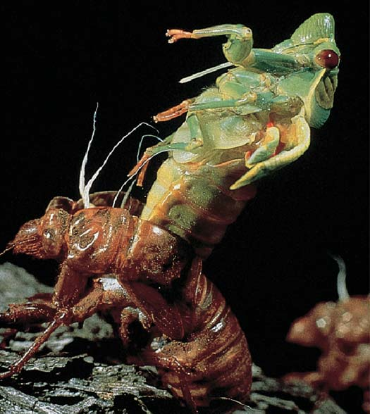
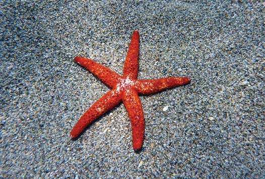
Protección, sostén y movimiento 847
Los huesos se remodelan durante toda la vida
Durante el desarrollo del feto, los huesos se forman de dos maneras. Los huesos largos, como el radio, se desarrollan a partir de plantillas de cartílago en un proceso denominado desarrollo endocondral del hueso . Un hueso empieza a osifi carse (a convertirse en hueso) en su diáfi sis y en las epífi sis se desarrollan sitios secundarios de producción ósea. La parte del hueso entre las regiones osifi cadas puede crecer. Por último, las regiones osifi cadas se fusionan. Por el contrario, otros huesos, incluyendo los externos y planos del cráneo, se desarrollan a partir de un andamio no cartilaginoso de tejido conectivo. Este proceso se conoce como desarrollo intramembranoso de los huesos . Los osteoblastos son células de formación de los huesos. Secretan la proteína colágeno, que forma las resistentes fi bras del hueso. El compuesto hidroxiapatita, integrado principalmente por fosfato de calcio, está presente en el fl uido intersticial (líquido en los tejidos). Cristaliza de manera automática alrededor de las fi bras de colágeno para formar la dura matriz del hueso. A medida que la matriz se forma alrededor de los osteoblastos, éstos quedan aislados dentro de las lagunas. Los osteoblastos atrapados se denominan entonces osteocitos . Los huesos son modelados durante el crecimiento y remodelados continuamente durante toda la vida en respuesta a esfuerzos físicos y otras demandas cambiantes. A medida que los músculos se desarrollan en respuesta a actividad física, los huesos a los que están unidos se vuelven más gruesos y fuertes. A medida que un hueso crece, el tejido se elimina de su interior, especialmente de las paredes de la cavidad medular. Los osteoclastos son células grandes con múltiples núcleos que descomponen (reabsorben) el hueso. Los osteoclastos se mueven secretando iones de hidrógeno que disuelven los cristales y enzimas que digieren el colágeno. Los osteoclastos y los osteoblastos son sinérgicos; juntos conforman los huesos. El proceso de remodelación es extensivo: ¡el esqueleto humano adulto es sustituido por completo cada 10 años! En la osteoporosis , la enfermedad ósea progresiva y degenerativa más común, la reabsorción del hueso se lleva a cabo más rápido que la formación del mismo. Los pacientes pierden tanta masa ósea que sus huesos se vuelven frágiles, lo cual aumenta bastante el riesgo de fracturas. La mayoría de los medicamentos usados para tratar la osteoporosis inhiben la reabsorción ósea mediada por los osteoclastos. Una adición reciente al arsenal del tratamiento estimula que los osteoplastos promuevan la formación de hueso.
Las articulaciones son las uniones entre los huesos
Las uniones , o articulaciones, son sitios de enlace entre dos o más huesos. Las articulaciones facilitan la fl exibilidad y el movimiento. En
aumentando así su diámetro. El eje principal de un hueso largo es su diáfi sis ; cada extremo extendido es una epífi sis . En los niños, un disco de cartílago, la metáfi sis , está entre la epífi sis y la diáfi sis. Las metáfi sis son centros de crecimiento que desaparecen en la madurez, convirtiéndose en vagas líneas epifi siarias . Los huesos largos tienen una cavidad central que contiene médula ósea . La médula ósea amarilla consta principalmente de un tejido conectivo graso; la médula roja en ciertos huesos produce células sanguíneas. El radio tiene una delgada cubierta externa de hueso compacto muy densa y dura. El hueso compacto se encuentra principalmente cerca de las superfi cies de un hueso, donde proporciona gran resistencia. Recuerde del capítulo 39 que el hueso compacto consta de unidades en forma de huso entrelazadas llamadas osteonas (vea la fi gura 39-2). En el interior de un osteona dentro de pequeñas cavidades denominadas lagunas, se encuentran los osteocitos (células óseas). Las lagunas están dispuestas en círculos concéntricos alrededor de canales haversianos centrales. Los vasos sanguíneos que nutren el tejido óseo pasan por los canales haversianos. Los osteocitos están unidos por extensiones fi liformes de su citoplasma que se extienden a través de canales estrechos denominados canalículos . El interior de la delgada concha de hueso compacto es un relleno de hueso esponjoso que proporciona resistencia mecánica. El hueso esponjoso consta de una red de delgadas hebras de hueso. Sus espacios están rellenos de médula ósea.
Cráneo
Esternón
Caja torácica
Vértebras
Húmero
Cintura pélvica
Peroné
Tibia
Tarsianos
Metatarsianos
Falanges
Fémur
Rótula
Falanges
Metacarpianos
Carpianos Cúbito
Radio
Clavícula
Escápula
- Esqueleto axial (café) (b) Esqueleto apendicular (café)
FIGURA 40-5 Animada El sistema óseo humano Aquí sólo se nombran algunos de los 206 huesos identifi cados.
848 Capítulo 40
Repaso
■ ¿Qué funciones lleva a cabo un esqueleto hidrostático?
■ ¿De qué manera contribuyen los septos de un anélido a la efi cacia de su esqueleto hidrostático?
■ ¿Cuáles son algunas desventajas de un exoesqueleto? ¿Y algunas ventajas?
■ ¿Cuáles son los huesos principales en cada división del esqueleto humano?
■ ¿Cómo remodelan los osteoblastos y los osteoclastos al hueso?
40.3 CONTRACCIÓN MUSCULAR
OBJETIVOS DE APRENDIZAJE
7 Relacionar la estructura de los músculos de vuelo de los insectos con su función. 8 Describir la estructura de los músculos esqueléticos y sus acciones antagónicas. 9 Enumerar, en sucesión, los eventos que ocurren durante la contracción muscular. 10 Comparar los papeles del glicógeno, el fosfato de creatina y el ATP en el suministro de energía para la contracción muscular. 11 Comparar las estructuras y funciones de los tres tipos de fi bras musculares óseas. 12 Describir factores que infl uyen en la contracción.
La mayoría de los animales poseen la capacidad de moverse de un sitio a otro. En la mayor parte del reino animal, un sistema muscular genera las fuerzas mecánicas y el movimiento requeridos para la locomoción y la manipulación de objetos. Los músculos también alimentan muchas acciones fi siológicas necesarias para mantener la homeostasis. Muchos animales poseen sistemas digestivos que empujan los alimentos mediante contracciones peristálticas y corazones que bombean líquidos circulatorios internos. Algunos animales también tienen vasos sanguíneos que mantienen su presión al apretar suavemente. Los animales con planes corporales muy simples no poseen tejido muscular, aunque todas las células eucariotas contienen la proteína contráctil actina . El principal componente de los microfi lamentos (vea la fi gura 4-28), la actina es importante en muchos procesos celulares, incluyendo el movimiento ameboide y la fi jación de células a superfi cies. En la mayoría de las células, la actina está asociada funcionalmente con la proteína contráctil miosina . La actina y la miosina están muy organizadas en las fi bras musculares.
El músculo de invertebrados varía entre los grupos
Antes en el capítulo se analizaron las células contráctiles del esqueleto hidrostático de las hidras y otros cnidarios. En la mayoría de otros grupos de animales el músculo es un tejido especializado organizado en capas defi nidas, o bandas como correas. Algunos fi los de invertebrados poseen esqueleto y músculo liso. Los moluscos bivalvos, como las almejas, tienen dos conjuntos de músculos para abrir y cerrar las conchas. Su músculo liso especializado, que es capaz de efectuar contracción lenta y sostenida a bajo costo energético, mantiene las dos conchas fuertemente cerradas durante largos períodos, incluso semanas. El músculo estriado, que se contrae rápidamente, se usa para nadar y cerrar la concha con celeridad cuando el molusco está amenazado. Los músculos de los artrópodos son estriados, incluso en las paredes del tracto digestivo.
la articulación, la superfi cie externa de cada hueso consta de cartílago articular. Una manera de clasifi car las articulaciones es según el grado de movimiento que permiten. Las suturas entre los huesos del cráneo humano son articulaciones inmóviles . En una sutura los huesos se mantienen unidos por medio de una delgada capa de denso tejido conectivo fi broso, que puede ser sustituido por hueso en el adulto. Las articulaciones ligeramente móviles , que se encuentran entre las vértebras, están hechas de cartílago y ayudan a absorber los golpes. La mayoría de las articulaciones son uniones con libertad de movimiento . Cada una está encerrada por una cápsula articular de tejido conectivo y revestida por una membrana que secreta un lubricante denominado líquido sinovial . Este líquido viscoso reduce la fricción durante el movimiento y absorbe golpes. La cápsula articular suele estar reforzada por ligamentos , bandas de tejido conectivo fi broso que unen los huesos y limitan el movimiento en la articulación. Con el tiempo y el uso, las articulaciones se desgastan. En la osteoartritis , un grupo común de enfermedades de las articulaciones, la reparación del cartílago no se mantiene al día con la degeneración y el cartílago articular se desgasta. Puede ocurrir infl amación de la cápsula articular, y el hueso crece de más o pueden desarrollarse espolones. En la artritis reumatoide , una enfermedad autoinmune, la membrana sinovial se engrosa e infl ama. El líquido sinovial se acumula, ocasionando presión, dolor, rigidez y deformación progresiva, produciendo pérdida de la función.
Superficie articular cubierta de cartílago
Médula roja en hueso esponjoso
Periostio
Médula amarilla
Suministro de sangre
Hueso compacto
Cartílago articular
Epífisis
Epífisis Metáfisis
Diáfisis
FIGURA 40-6 Animada Un hueso largo típico Un hueso largo tiene una delgada capa de hueso compacto y un relleno de hueso esponjoso que contiene la médula.
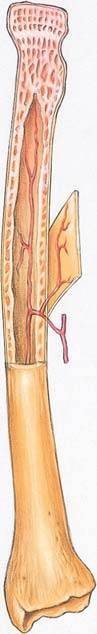
Protección, sostén y movimiento 849
movimiento de aleteo del insecto cambia de dirección y velocidad, y las carreras ascendentes alternan con carreras descendentes a ritmos bastante altos. En cada cambio de carrera, el ala gira alrededor de su eje largo y se inclina en el ángulo justo para la nueva dirección de movimiento.
Los músculos del esqueleto vertebrado actúan de manera antagónica entre sí
Los músculos del esqueleto producen movimientos al tirar de tendones , cordones resistentes de tejido conectivo que anclan los músculos al hueso. Los músculos del esqueleto, o sus tendones, pasan a través de una articulación y están unidos a los huesos a cada lado de ella. Cuando el músculo se contrae, tira de un hueso hacia o lejos del otro hueso al que está articulado. Puesto que los músculos nada más pueden contraerse, sólo pueden tirar; no empujar. Los músculos actúan de manera antagónica entre sí, lo que signifi ca que el movimiento producido por uno puede ser invertido por otro. El bíceps, por ejemplo, fl exiona (dobla) el brazo, mientras que la contracción del tríceps lo extiende ( FIGURA 40-7 ). Así, el bíceps y el tríceps actúan de manera antagónica. El músculo que se contrae para producir una acción particular se denomina agonista . El músculo que produce el movimiento opuesto se denomina antagonista Cuando el agonista se contrae, el antagonista está relajado. En general, los movimientos se logran por medio de grupos de músculos que trabajan de manera conjunta, de modo que varios agonistas y antagonistas pueden tomar parte en cualquier acción. Observe que los músculos que son agonistas en un movimiento pueden servir
Los músculos de vuelo de los insectos están adaptados para contracción rápida
Los insectos fueron los primeros animales en los que evolucionó el vuelo, una adaptación que ha contribuido a su impresionante éxito biológico (vea el capítulo 31). La manera precisa en que vuelan los insectos constituye un misterio aerodinámico y los científi cos están trabajando para comprender su extraordinaria habilidad para maniobrar. Los músculos de vuelo de los insectos se contraen más rápido que cualquier otro músculo conocido: ¡hasta 1000 contracciones por segundo! No es de extrañar que los músculos de vuelo de los insectos en acción tengan la tasa metabólica conocida más elevada de cualquier tejido muscular. Como se puede imaginar, los músculos de vuelo de los insectos están estructuralmente bien adaptados a su función. Contienen más mitocondrias que cualquier otra variedad de músculo conocida. Sus mitocondrias también tienen más crestas (pliegues de sus membranas internas) y pueden consumir oxígeno dos veces más rápido que las mitocondrias de los mamíferos. Los músculos de los insectos también están infi ltrados en forma muy elaborada con tráqueas , delgados tubos llenos de aire que transportan oxígeno directamente a cada fi bra. Muchos insectos deben calentarse antes de volar porque un incremento en la temperatura corporal aumenta la tasa de síntesis de ATP. Las mariposas y algunos otros insectos toman el Sol antes de volar. Las abejas hacen “temblar” sus músculos para aumentar su temperatura corporal. En el moscardón común, las alas pueden agitarse a 120 ciclos por segundo . Sin embargo, en el mismo moscardón, las neuronas que inervan los músculos de vuelo que se contraen con tanta energía les suministran impulsos a la sorprendentemente baja frecuencia de tres por segundo. De hecho, alrededor de 75% de las especies de insectos voladores baten sus alas demasiado rápido para que cada contracción sea controlada por una señal proveniente de la neurona motora. En vez de ello, tienen contracciones musculares asíncronas , o indirectas, en las que la contracción muscular no está sincronizada con señales de las neuronas motoras. En insectos con contracciones musculares asíncronas, los músculos de vuelo estriados no están unidos directamente a las alas. Lo están a las porciones fl exibles del exoesqueleto que se articulan con las alas. Las propiedades mecánicas de esta disposición muscu loesquelética proporcionan los estímulos para la contracción al estirar las fi bras musculares a una alta frecuencia. Cada contracción de los músculos produce “hoyuelos” en el exoesqueleto asociados con una carrera descendente, y algunas veces, dependiendo de la disposición exacta de los músculos, también en la carrera ascendente. Cuando el hoyuelo vuelve a la posición en reposo, los músculos unidos a él se estiran. El estiramiento inicia de inmediato otra contracción y el ciclo se repite. Así, la deformación del exoesqueleto es transmitida como una fuerza a las alas, que se baten con tal rapidez que es posible percibir los sonidos como una nota musical. Sin embargo, para mantener las contracciones se requieren impulsos nerviosos. De alguna manera los insectos producen una elevación que es superior 20 veces o más a su peso corporal. Una cuestión toral ha sido cómo sus alas batientes generan fuerza sufi ciente para mantenerlos en el aire. El vuelo de los insectos implica mucho más que sólo el hecho de batir las alas hacia arriba y hacia abajo. El
El tríceps se relaja
El bíceps se contrae
- Flexión. Cuando el bíceps se contrae, el brazo se flexiona (dobla). (b) Extensión. Cuando el tríceps se contrae, el brazo se extiende.
El bíceps se relaja
El tríceps se contrae
FIGURA 40-7 Animada Acción muscular Los músculos bíceps y tríceps actúan de manera antagónica.
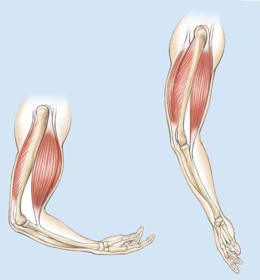
850 Capítulo 40
aún más pequeñas, los miofi lamentos , o simplemente fi lamentos . Hay dos tipos principales de miofi lamentos: los fi lamentos de miosina y los fi lamentos de actina. Los fi lamentos de miosina son gruesos y constan principalmente de la proteína miosina. Los delgados fi lamentos de actina constan principalmente de la proteína actina; también contienen las proteínas tropomiosina y troponina , que regulan la interacción de los fi lamentos de actina con los fi lamentos de miosina. Los fi lamentos de miosina y actina están organizados en unidades repetitivas denominadas sarcómeros , las unidades básicas de la contracción muscular. Cientos de sarcómeros unidos extremo con extremo forman una miofi brilla. Los sarcómeros están unidos en sus extremos por medio de un entramado de fi lamentos denominado línea Z . Cada sarcómero consta de fi lamentos de miosina y actina superpuestos. Los fi lamentos se traslapan longitudinalmente en las fi bras musculares, produciendo el patrón de bandas o estrías transversales del músculo estriado ( FIGURA 40-10 ; vea también la fi gura 40-9). Las bandas se designan con las letras A , H e I . La banda I consta de partes de fi lamentos de actina de dos sarcómeros adyacentes. La banda A es la ancha región oscura que incluye
como antagonistas en otro. Algunos de los músculos esqueléticos superfi ciales del cuerpo humano se muestran en la FIGURA 40-8 .
Un músculo vertebrado puede constar de miles de fi bras musculares
El músculo esquelético es el tejido más abundante en el cuerpo vertebrado. Sus células elongadas, denominadas fi bras musculares , están organizadas en haces envueltos por tejido conectivo. El bíceps del brazo, por ejemplo, consta de miles de fi bras musculares individuales y sus cubiertas de tejido conectivo. Cada fi bra muscular estriada es una larga célula cilíndrica con muchos núcleos ( FIGURA 40-9 ). La membrana plasmática, conocida como el sarcolema en una fi bra muscular, tiene múltiples extensiones hacia dentro que forman un conjunto de túbulos T (túbulos transversales). El citoplasma de una fi bra muscular se denomina sarcoplasma y el retículo endoplásmico se denomina retículo sarcoplásmico . Las miofi brillas , que son estructuras fi liformes, están dispuestas longitudinalmente a lo largo de la fi bra muscular. Constan de estructuras
Músculos que flexionan los dedos Platisma
Músculos faciales
Esternocleidomastoideo
Trapecio
Clavícula
Deltoide
Pectoral mayor
Bíceps braquial
Braquial
Flexores de la muñeca y los dedos
Tríceps braquial
Gastrocnemio
Tibial anterior
Tibia
Rótula
Sóleo
Cuadríceps
Sartorio
Recto interno
Glúteo medio
Oblicuo externo
Línea alba
Recto abdominal
Dorsal ancho
- Vista anterior
Braquialis
Esternocleidomastoideo
Trapecio
Deltoide
Tríceps braquial
Braquiorradial
Músculos que flexionan los dedos
Bíceps braquial
Dorsal ancho
Oblicuo externo
Glúteo mayor
Recto Semitendinoso
Bíceps femoral
Semimembranoso
Músculos isquiotibiales
Gastrocnemio
Sóleo
Tendón de Aquiles
Calcáneo
- Vista posterior
FIGURA 40-8 Algunos músculos superfi ciales del cuerpo humano Los rótulos en negritas indican huesos.
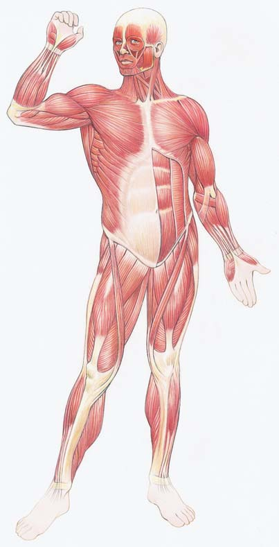
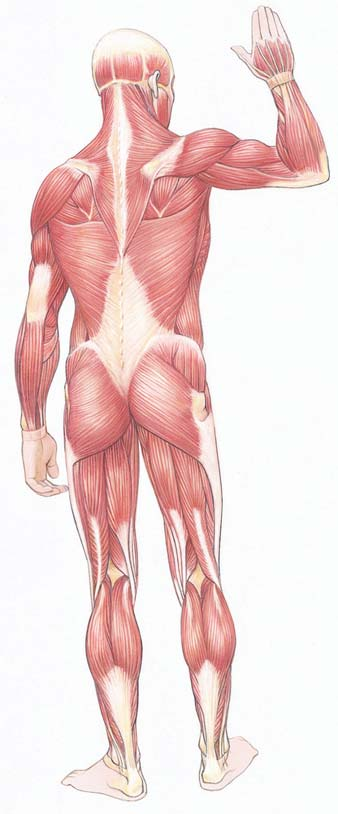
Protección, sostén y movimiento 851
Una fi bra muscular esquelética contiene miofi brillas fi liformes que constan de fi lamentos de actina y miosina; los fi lamentos están organizados en unidades repetitivas denominadas sarcómeros.
25 μ m 1 μ m
- Micrografía por transmisión de electrones de un músculo estriado (e) Micrografía que muestra estrías.
Bíceps
Fibras musculares
Un músculo como el bíceps en el brazo consta de muchos fascículos (haces) de fibras musculares.
Un fascículo envuelto en una cubierta de tejido conectivo.
Mitocondria Núcleo Túbulo T Sarcolema
Retículo sarcoplásmico
Miofibrilla
Línea Z
Miofilamentos
Sarcómero
- Parte de una fibra muscular que muestra la estructura de las miofibrillas. Las líneas Z marcan los extremos de los sarcómeros.
Bloom and Fawcett Textbook of Histology
Ed Reschke/Peter Arnold
FIGURA 40-9 Animada Estructura muscular
El patrón regular de fi lamentos traslapados proporciona a los músculos esquelético y cardiaco su apariencia estriada.
PUNTO CLAVE
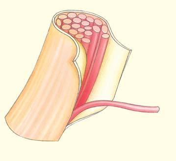
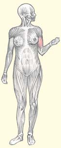
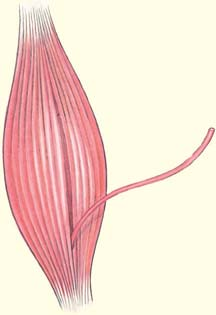
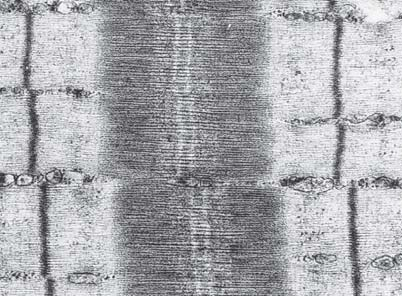
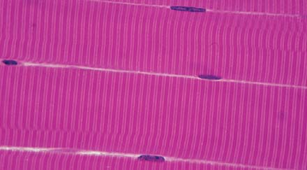
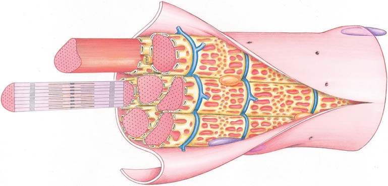
852 Capítulo 40
de 45 grados en un movimiento de fl exión. Este movimiento, la carrera de fuerza , acerca el fi lamento de actina al centro del sarcómero. Durante la carrera de fuerza se libera el ADP. Un nuevo ATP debe unirse a la cabeza de miosina antes de que la miosina pueda separarse de la actina. Si hay bastantes iones de calcio, el ciclo empieza de nuevo. Una vez energizadas nuevamente, las cabezas de miosina entran en contacto con un segundo conjunto de sitios activos sobre el fi lamento de actina; este siguiente conjunto está alejado del fi lamento, más próximo al extremo del sarcómero. El proceso se repite con un tercer conjunto de sitios activos y así sucesivamente. Esta serie de movimientos paso a paso tira del fi lamento de actina hacia el centro del sarcómero. Cada vez que la cabeza de miosina se fi ja, se mueve 45 grados, se separa y luego vuelve a fi jarse más lejos a lo largo del fi lamento de actina, el músculo se acorta. Una forma de visualizar este proceso es suponiendo que las cabezas de miosina participan en un “mano a mano” con los fi lamentos de actina. Cuando muchos sarcómeros se contraen simultáneamente, contraen al músculo como un todo. La secuencia de eventos en la contracción muscular puede resumirse como sigue:
- Una neurona motora libera acetilcolina, que se une a receptores en la fi bra muscular; la unión ocasiona despolarización y la generación de un potencial de acción. 2. El potencial de acción se dispersa a través de los túbulos T, ocasionando la liberación de Ca 2+ del retículo sarcoplásmico. 3. El Ca 2+ se une a la troponina, que entonces experimenta un cambio conformacional; se exponen los sitios activos en los fi lamentos de actina. 4. El ATP (sujeto a la miosina) se divide y la cabeza energizada de miosina se carga; se une al sitio activo en el fi lamento de actina, formando un puente cruzado. 5. La liberación de P i de la cabeza de miosina desencadena la carrera de fuerza. 6. Durante la carrera de fuerza, las cabezas de miosina tiran del fi lamento de actina hacia el centro del sarcómero, acortando al múscu lo; se libera ADP. 7. La cabeza de miosina se une al ATP y se libera de la actina. Si la concentración de Ca 2+ es sufi cientemente alta, la secuencia se repite desde el paso 3.
Cuando cesan los impulsos de la neurona motora, la enzima acetilcolinesterasa en la hendidura sináptica inactiva la acetilcolina. Las fi bras musculares regresan a su estado de reposo. Los iones de calcio son bombeados de vuelta hacia el retículo sarcoplásmico por transporte activo, un proceso que requiere ATP. La eliminación de calcio es el paso clave en la relajación muscular. Sin Ca 2+ , la tropomiosina cubre de nuevo los sitios activos en los fi lamentos de actina. Los fi lamentos de actina se deslizan de regreso a su posición original y el músculo se relaja. Esta serie completa de eventos ocurre en milisegundos.
El ATP da energía a la contracción muscular
Las células musculares a menudo actúan con vigor y necesitan grandes cantidades de energía. Como ya se ha observado, la fuente inmediata de energía para la contracción muscular es el ATP. La energía almacenada en las moléculas de ATP alimenta la carga, la fi jación de las cabezas de miosina a los fi lamentos de actina, la fl exión y la liberación de las cabezas de miosina. Observe que se requiere energía, pero no sólo para la atracción ejercida por los puentes cruzados sino también para su liberación de cada sitio activo.
fi lamentos de miosina y de actina traslapados. Dentro de la banda A hay una estrecha zona iluminada, la zona H , formada exclusivamente de fi lamentos de miosina; los fi lamentos de actina no llegan a esta región.
La contracción ocurre cuando los fi lamentos de actina y miosina se deslizan unos sobre otros
La contracción muscular ocurre cuando los sarcómeros, y por tanto las fi bras musculares, se acortan. Esta explicación de contracción muscular, conocida como modelo de deslizamiento de fi lamentos , fue desarrollada en la década de 1950 por dos biólogos ingleses, Hugh Huxley y Andrew Huxley. (No eran parientes. Trabajaron por separado y de manera independiente llegaron a las mismas conclusiones generales casi al mismo tiempo). Gracias a los Huxley, ahora se comprende que el músculo se acorta a medida que los fi lamentos de miosina y de actina se deslizan unos sobre otros, incrementando su traslapamiento. Puede pensarse en una escalera de extensión. La longitud total de cada sección de la escalera cambia a medida que los extremos se aproximan o alejan entre sí, pero la longitud de cada sección de la escalera permanece igual. Las longitudes de la banda I y de la zona H disminuyen pero ninguno de los fi lamentos, el de actina o el de miosina, se acorta. Las neuronas motoras transmiten mensajes desde el cerebro o la médula espinal a las fi bras musculares. Cuando una neurona motora transmite un mensaje, libera el neurotransmisor acetilcolina hacia la hendidura sináptica , un pequeño espacio entre la neurona motora y cada fi bra muscular. La acetilcolina se une con receptores en cada fi bra muscular, ocasionando despolarización , un cambio en la distribución de carga eléctrica a través de su sarcolema. La despolarización puede provocar que en la fi bra muscular se genere una señal eléctrica o potencial de acción . En una fi bra muscular, un potencial de acción es una onda de despolarización que se desplaza a lo largo del sarcolema hacia el sistema de membranas de los túbulos T. La despolarización de los túbulos T abre canales de calcio en el retículo sarcoplásmico y iones de calcio almacenados son liberados hacia las microfi brillas. Los iones de calcio se unen a la proteína troponina en los fi lamentos de actina, lo cual cambia la forma de la troponina. Este cambio resulta en que la troponina aleja la tropomiosina de los sitios activos en el fi lamento de actina ( FIGURA 40-11 ). Estos sitios activos, también denominados sitios de unión de la miosina , se explican a continuación. Un extremo de cada molécula de miosina está plegado en dos estructuras globulares denominadas cabezas . Las cabezas redondas de las moléculas de miosina se extienden lejos del cuerpo del fi lamento de miosina. Cada molécula de miosina también posee una cola larga que se une a otras colas de miosina para formar el cuerpo del fi lamento grueso. El ATP se une a la miosina cuando la fi bra muscular está en reposo (no contraída). La miosina es una trifosfatasa de adenosina (ATPasa), una enzima que divide el ATP para formar ADP y fosfato inorgánico (P i ). La miosina convierte la energía química del ATP en la energía mecánica de los fi lamentos deslizantes. Según el modelo actual de contracción muscular, cuando el ATP se divide, al ADP y el P i inicialmente permanecen sujetos a la cabeza de miosina. La cabeza de miosina (con el ADP y el P i aún unidos a ella) se encuentra en un estado energizado; está “cargada”. La cabeza de miosina se une a un sitio activo expuesto en el fi lamento de actina, formando un puente cruzado que une los fi lamentos de miosina y actina. Luego se libera el fosfato inorgánico, lo que desencadena un cambio conformacional en la cabeza de miosina. La cabeza de miosina se dobla alrededor
Protección, sostén y movimiento 853
Un músculo se contrae cuando los fi lamentos de actina y miosina se deslizan uno sobre otro. La longitud de cada fi lamento permanece igual
Banda I
Zona H
Banda A
Filamento de actina (delgado)
Línea Z
Puentes cruzados
Sarcómero
Sarcómero
Miosina (filamento grueso) Actina (filamento delgado)
Filamento de miosina (grueso)
Puentes cruzados
Fibra muscular en estado de relajación. Observe que la banda I y la zona H son relativamente anchas.
Sección transversal de una miofibrilla. Observe la disposición de los filamentos de actina y miosina. Cada filamento de miosina está rodeado en cada extremo por seis filamentos de actina.
Contracción muscular. La banda I y la zona H disminuyen en longitud y los filamentos se deslizan uno sobre otro.
Relación de una fibra muscular, miofibrillas y filamentos. Parte de una fibra muscular que muestra la ubicación de los filamentos en una miofibrilla.
H. E. Huxley
H. E. Huxley
1
2
3
Fibra muscular contrayéndose. Los filamentos de actina y miosina se deslizan uno sobre otro, aumentando la cantidad de traslape entre la miosina y la actina. Observe que la banda I y la zona H disminuyen en longitud. Los filamentos no se acortan.
Fibra muscular contraída. Los filamentos de actina se traslapan, eliminando la zona H. Las bandas I también desaparecen cuando las líneas Z son acercadas a filamentos de miosina.
FIGURA 40-10 Animada Modelo de fi lamentos deslizantes de la contracción muscular Los fi lamentos de miosina y actina están organizados en unidades repetitivas denominadas sarcómeros. A medida que los sarcómeros se achican, la fi bra muscular se acorta, pero el tamaño de los fi lamentos no cambia. (La banda I consta de fi lamentos de actina de dos sarcómeros adyacentes).
PUNTO CLAVE
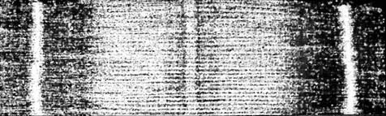
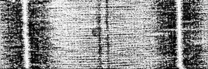
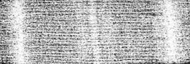
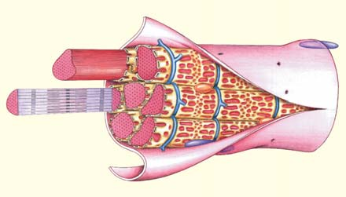
854 Capítulo 40
La energía del ATP da energía a la contracción muscular. Durante la carrera de fuerza, las cabezas de miosina mueven los fi lamentos de actina hacia el centro del sarcómero, lo que acorta el músculo.
Tropomiosina
Troponina
Filamento de miosina
Filamento de actina
Sitio de unión del ATP
Sitios activos
ATP
El ATP se divide. La cabeza de miosina, ahora cargada, se une al sitio activo expuesto, formando el puente cruzado.
Se libera P i .
P Ca Ca 2+ 2+ Ca 2+
Ca Ca 2+ 2+ Ca 2+ Ca Ca 2+ 2+ Ca 2+
Ca Ca 2+ 2+ Ca 2+
Ca Ca 2+ 2+ Ca 2+
Ca Ca 2+ 2+ Ca 2+
Ca Ca 2+ 2+ Ca 2+ Ca Ca 2+ 2+ Ca 2+ Ca Ca 2+ 2+ Ca 2+ Ca Ca 2+ 2+ Ca 2+
Ca Ca 2+ 2+ Ca 2+
El puente cruzado se flexiona, y el filamento de actina es jalado hacia el centro del sarcómero. Este movimiento es la carrera de fuerza. Se libera ADP.
ADP
El Ca 2+ se une a la troponina, originando un cambio en la forma. La troponina aleja la tropomiosina, exponiendo los sitios activos en los filamentos de actina.
En caso de que haya Ca 2+ disponible
El complejo actina-miosina se une al ATP y la miosina se separa de la actina.
ATP
ADP P
ADP
2
1
3 4
5
6
7
El impulso neuronal se dispersa a través de los túbulos T estimulando la liberación de Ca 2+ desde el retículo sarcoplásmico.
La acetilcolina (liberada por la neurona motora) se combina con los receptores de las fibras musculares causando despolarización y un potencial de acción.
FIGURA 40-11 Animada Contracción muscular: modelo de interacciones de actina y miosina Cuando los fi lamentos de actina se deslizan hacia el centro de sarcómeros individuales de una miofi brilla, el resultado son contracciones. Después del paso 7, el ciclo se repite desde el paso 3 si hay disponibles iones de calcio. En ausencia de iones de calcio, el músculo se relaja.
PUNTO CLAVE
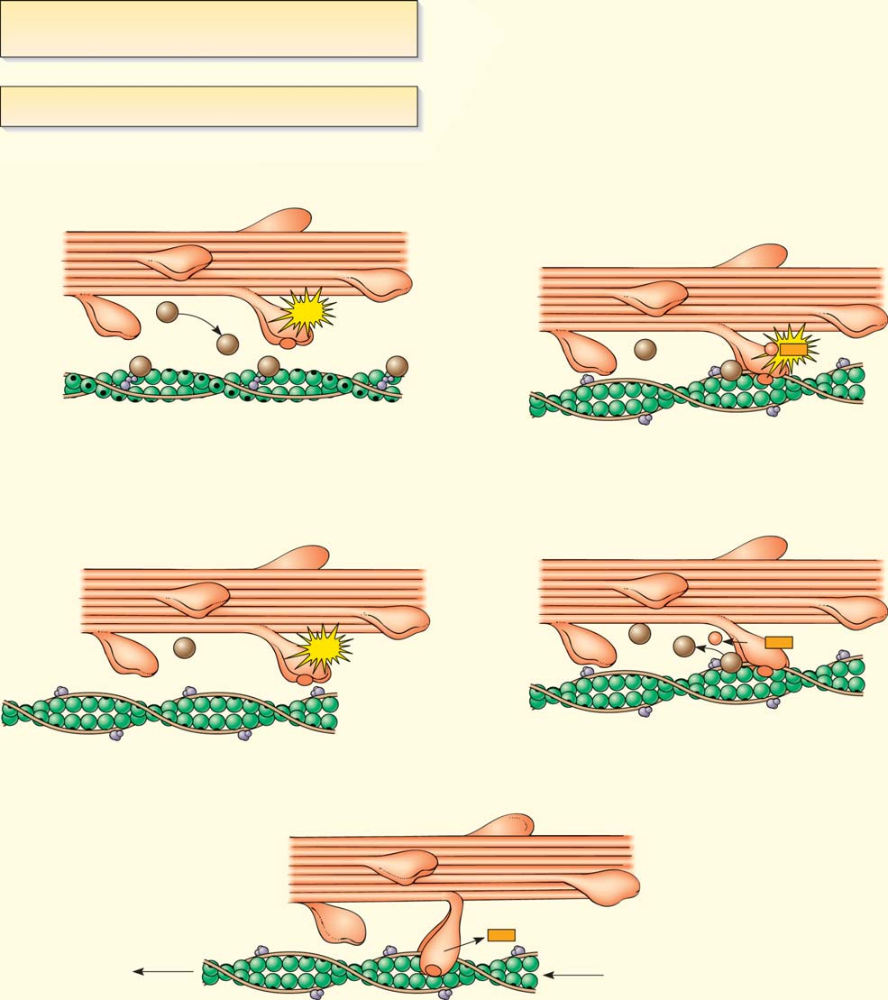
Protección, sostén y movimiento 855
su mioglobina, las fi bras oxidativas lentas son rojas y algunas veces se denominan fi bras rojas. Las fi bras glicolíticas rápidas generan bastante energía y realizan movimientos rápidos pero pueden sostener esta actividad sólo durante un corto período. Son importantes en actividades como carreras de velocidad y levantamiento de pesas. Las fi bras glicolíticas rápidas se contraen rápidamente, tienen pocas mitocondrias y obtienen la mayor parte de su energía de la glicólisis. Una vez que se ha agotado su suministro de glucógeno, se fatigan con rapidez. Estas fi bras tienen bajo contenido de mioglobina y son blancas. (Algunas veces se denominan fi bras blancas). Las personas sedentarias tienen más fi bras glicolíticas que las personas en buena forma física. Con entrenamiento físico, estas fi bras se convierten en fi bras oxidativas rápidas. Las fi bras oxidativas rápidas , también conocidas como fi bras intermedias , se contraen rápidamente y tienen una tasa de fatiga intermedia. Así como las fi bras oxidativas lentas, son ricas en mitocondrias y obtienen la mayor parte de su ATP de la respiración aeróbica. Tienen alto contenido de mioglobina y son de color rojo. Los músculos completos se pueden especializar en respuestas rápidas o lentas. En los pollos, por ejemplo, los músculos blancos de la pechuga son efi cientes para respuestas rápidas, tal vez porque el vuelo corto es un mecanismo de escape para los pollos. No obstante, caminan sobre el piso todo el día; la carne oscura (roja) de la pierna y el muslo es músculo especializado para realizar actividades más sostenidas. Las aves que vuelan tienen músculos pectorales rojos especializados en soportar una actividad sostenida. En los humanos, la mayoría de los músculos tienen una mezcla de tipos diferentes de fi bras. Las proporciones de los tipos de fi bras varían entre individuos y de músculo a músculo en la misma persona. El ejercicio aeróbico, como el trote o el ciclismo, aumenta la resistencia. El entrenamiento aeróbico aumenta la densidad capilar, el número de mitocondrias y el contenido de mioglobina de las fi bras musculares. En entrenamiento de resistencia ; por ejemplo, levantamiento de pesas, músculos específi cos se contraen repetidamente bajo cargas pesadas. Esta acción incrementa el número de fi lamentos en las fi bras musculares, lo que aumenta el tamaño del músculo.
Varios factores afectan la intensidad de la contracción muscular
Además de los tipos de fi bras musculares que forman el músculo, la contracción de todo un músculo depende del número de fi bras
La rigidez cadavérica , la rigidez muscular temporal pero muy marcada que ocurre después de la muerte, resulta del agotamiento del ATP. Cuando ocurre la muerte, la respiración celular cesa y se agota el ATP. No obstante, en el instante de la muerte, muchas fi bras musculares están en el proceso de contracción y se han formado puentes cruzados. Debido a que el ATP es esencial para la liberación de las cabezas de miosina, los puentes cruzados permanecen intactos. La rigidez cadavérica no persiste de manera indefi nida porque todo el aparato contráctil de los músculos termina por descomponerse, restaurando la fl exibilidad. El fenómeno depende de la temperatura, así que dada la temperatura imperante, un médico forense puede determinar la hora de fallecimiento de un cadáver a partir de su grado de rigidez cadavérica. Las moléculas de ATP pueden proporcionar energía sólo durante unos cuantos segundos de actividad agotadora. Por fortuna, las fi bras musculares tienen un compuesto de almacenamiento de energía de respaldo, el fosfato de creatina , que puede almacenarse. La energía almacenada en el fosfato de creatina se transfi ere al ATP a medida que se necesita. Pero durante ejercicio vigoroso, el suministro de fosfato de creatina se agota rápidamente. Las células musculares deben reponer sus suministros de este compuesto rico en energía. Las fi bras musculares almacenan energía química en el glicógeno , un gran polisacárido formado a partir de cientos de moléculas de glucosa. El glicógeno puede ser degradado, produciendo glucosa, que a su vez se degrada en la respiración celular. Cuando se dispone de sufi ciente oxígeno, se captura sufi ciente energía de la glucosa para producir las cantidades necesarias de ATP y fosfato de creatina. Durante un estallido de ejercicio vigoroso, el sistema circulatorio no puede entregar oxígeno sufi ciente para mantener la demanda de las fi bras musculares que lo metabolizan rápidamente. Esto resulta en una deuda de oxígeno . En estas condiciones, las fi bras musculares descomponen moléculas de combustible de manera anaeróbica (sin oxígeno) por períodos cortos. La fermentación de ácido láctico es un método de generación de ATP en forma anaeróbica, aunque no en grandes cantidades (vea la fi gura 8-14). El agotamiento del ATP resulta en contracciones más débiles y fatiga muscular. La acumulación del ácido láctico como producto residual también contribuye a la fatiga muscular. Los atletas bien entrenados desarrollan la habilidad de tolerar los altos niveles de ácido láctico generados durante la actividad de alto rendimiento. El período de respiración rápida que generalmente sigue al ejercicio extenuante paga la deuda de oxígeno por medio del consumo de ácido láctico.
El tipo de fi bras musculares determina la fuerza y la resistencia
En los vertebrados se han identifi cado tres tipos principales de fi bras musculares óseas: oxidativas lentas, glicolíticas rápidas y oxidativas rápidas ( TABLA 40-1 ). Las fi bras oxidativas lentas están bien adaptadas para actividades de resistencia como nadar y correr grandes distancias, y para mantener la postura. Se contraen y fatigan lentamente. Estas fi bras requieren un suministro estable de oxígeno. Obtienen la mayor parte de su energía de la respiración aeróbica y son ricas en mitocondrias y capilaridades. Las fi bras oxidativas lentas son ricas en mioglobina , un pigmento rojo semejante a la hemoglobina, que almacena oxígeno en los glóbulos rojos. La mioglobina mejora la rápida difusión de oxígeno de la sangre hacia los músculos durante el ejercicio agotador. Debido a
Características de las fi bras musculares óseas
Fibras oxidativas Fibras glicolíticas Fibras Características lentas rápidas oxidativas rápidas
Velocidad de contracción Lenta Rápida Rápida
Tasa de fatiga Lenta Rápida Intermedia
Vía principal para la Respiración Glicólisis Respiración síntesis de ATP aeróbica aeróbica
Mitocondrias Muchas Pocas Muchas
Intensidad de Baja Alta Intermedia contracción
Contenido de Alto Bajo Alto mioglobina
Color de la fi bra Rojo Blanco Rojo
TABLA 40-1
856 Capítulo 40
Mensajes desde el cerebro o la médula espinal activan las unidades motoras. Entre más unidades motoras sean reclutadas , más fuertes son las contracciones. Un factor importante que afecta la tensión de las fi bras musculares que se contraen es la frecuencia de la estimulación. En respuesta a un simple y breve estímulo eléctrico, el músculo esquelético se contrae de manera simple y rápida denominada contracción sencilla . Cuando un segundo estímulo es recibido antes de que la primera contracción esté completa, las dos contracciones pueden agregarse, proceso denominado suma ( FIGURA 40-13 ). Típicamente, el músculo esquelético recibe por separado una serie de estímulos sincronizados de modo que casi coinciden. La suma resulta en una contracción continua y sostenida denominada tétanos . Dependiendo de la identidad y el número de las fi bras musculares que se contraen tetánicamente, es posible ensartar una aguja, mecer a un bebé o correr un kilómetro. Cuando una persona levanta un objeto pesado, pone una carga sobre los músculos involucrados. A medida que aumenta el peso de la carga, los músculos se contraen con más fuerza (dentro de límites). Aun cuando una persona no está en movimiento, sus músculos se encuentran en un estado de contracción parcial denominada tono muscu lar . En cualquier momento dado, algunas fi bras musculares están contraídas, estimuladas por mensajes de las neuronas motoras. El tono muscular es un proceso inconsciente que mantiene a los músculos preparados para la acción. Cuando se corta el nervio motor a un músculo, éste se vuelve débil (completamente relajado o fl ácido) y termina por atrofi arse (disminuye su tamaño).
El músculo liso y el músculo cardiaco son involuntarios
En la tabla 39-3 se comparan los tres tipos de músculo vertebrado: esquelético, liso y cardiaco. Los tres tipos de músculo tienen fi lamentos delgados de actina que se deslizan a lo largo de gruesos fi lamentos de miocina en respuesta a un incremento en la concentración de iones de calcio. Los tres tipos de músculo usan ATP para alimentar la contracción. No obstante, cada tipo de músculo está especializado para tipos particulares de respuesta. Ni el músculo liso ni el músculo cardiaco están bajo control voluntario. El músculo liso no está sujeto a huesos, sino que forma tubos que se estrechan como el tejido muscular en la pared del cuerpo de la lombriz de tierra. El músculo liso a menudo se contrae en respuesta a estiramiento simple y su acción tiende a ser sostenida. Está bien adaptado para efectuar tareas como regulación de la presión sanguínea mediante contracción sostenida de las paredes de las arteriolas. Aunque el múscu lo liso se contrae lentamente, se encoge mucho más que el músculo estriado; se estrecha de manera impresionante. El músculo liso no es estriado porque sus fi lamentos de actina y miosina no están organizados en miofi brillas o en sarcómeros. Las fi bras del tejido muscular liso funcionan como una unidad porque están conectadas por uniones de brecha o uniones comunicantes (vea el capítulo 5). Las uniones de brecha permiten que las señales eléctricas pasen con rapidez de fi bra en fi bra. Aunque la contracción del músculo liso básicamente se asemeja a la contracción del músculo esquelético (que ocurre por el mecanismo de fi lamentos deslizantes), los puentes cruzados en el tejido liso permanecen más tiempo en tensión. Es por esto que se requiere menos ATP para mantener un nivel alto de fuerza. El músculo cardiaco se contrae y relaja a un ritmo alternado, propulsando sangre en cada contracción. ¡La contracción sostenida del músculo cardiaco podría ser desastrosa! Así como las fi bras musculares lisas, las fi bras musculares cardiacas están acopladas eléctricamente
muscu lares que se contraen, la tensión desarrollada por cada fi bra, la frecuencia de la estimulación, la condición del músculo; por ejemplo, si está fatigado o no, y la carga sobre el músculo. Mientras más fi bras musculares se contraen, hay mayor tensión en el músculo. En una unidad motora , una neurona motora está conectada funcionalmente con un promedio de 150 fi bras musculares ( FIGURA 40-12 ). Sin embargo, algunas unidades motoras tienen menos de una docena de neuronas motoras y otras tienen varios cientos. Cada unión de una neurona motora con una fi bra muscular se denomina unión neuromuscular .
10 μ m
Articulaciones neuromusculares
Sección transversal de la médula espinal
Nervio espinal
Fibra motora nerviosa
Músculo
Parte de la fibra musculosa
Articulación neuromuscular
La unidad motora que se ilustra aquí muestra sólo una fibra de una neurona motora.
Micrografía por escaneo de electrones de algunas de las fibras en una unidad motora. Observe cómo las neuronas se ramifican para inervar todas las fibras musculares en la unidad motora.
Don Fawcett/Science Source/Photo Researchers, Inc.
FIGURA 40-12 Animada Una unidad motora Una unidad motora consta de una neurona motora y las fi bras musculares que inerva.
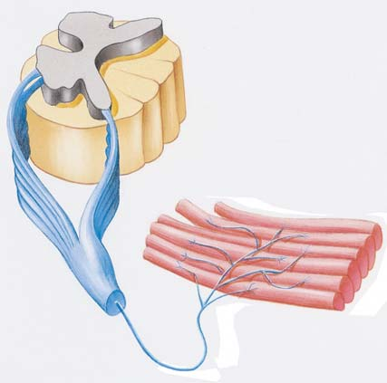
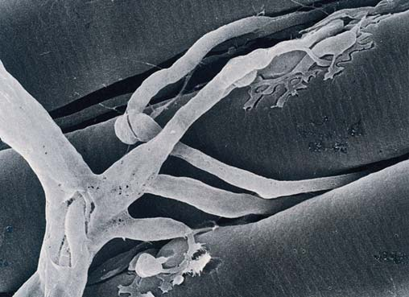
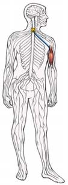
Protección, sostén y movimiento 857
Repaso
■ Describa una fi bra muscular ósea. ¿Cuáles son sus dos tipos de fi lamentos?
■ ¿Qué eventos ocurren cuando una fi bra muscular se contrae (empieza con liberación de acetilcolina e incluye acción de puente cruzado)?
■ ¿Cuál es el papel del ATP en la contracción muscular? ¿Cuáles son las funciones del fosfato de creatina y el glucógeno?
■ ¿Qué es la suma?
por uniones de brecha (denominadas discos intercalados). Cada latido del corazón es iniciado por un marcapasos , una masa especializada de múscu lo cardiaco. Un sistema de conducción transmite la señal a través de todo el músculo cardiaco y el corazón late a un ritmo regular independiente de una inervación. No obstante, la frecuencia cardiaca es regulada, según las necesidades del cuerpo, por neuronas en los centros cardiacos en la médula del cerebro (lo cual se analiza en el capítulo 44).
Tiempo
Tensión
3
2
1
0
Contracción sencilla
Suma de la contracción
Tétano
Extremos de la estimulación
Cuando se permite que una fibra muscular se relaje por completo y luego es estimulada por segunda ocasión, la segunda contracción es de la misma magnitud que la primera.
Cuando una fibra muscular es estimulada por segunda ocasión antes que esté completamente relajada, la segunda contracción se suma a la primera. El resultado es la suma.
Una descarga de estímulos rápidos no permite que la fibra muscular se relaje entre estímulos. Ocurre una contracción sostenida, denominada tétano.
FIGURA 40-13 Animada Suma y tétanos
40.1 (página 843)
1 Comparar las funciones de los revestimientos epiteliales de invertebrados y vertebrados.
■ El tejido epitelial protege tejidos subyacentes y puede estar especializado en funciones sensoriales o respiratorias. El epitelio exterior puede estar especializado para secretar sustancias antibacteriales o venenosas.
■ En muchos invertebrados el epitelio exterior está especializado en la secreción de una cutícula o concha protectora.
■ El sistema integumentario de los vertebrados incluye la piel y las estructuras que se desarrollan a partir de ésta. La piel de los mamíferos incluye pelo, garras o uñas, glándulas sudoríparas y receptores sensoriales. 2 Relacionar la estructura de la piel de los vertebrados con sus funciones.
■ El plumaje de las aves y el pelaje de los mamíferos forman una capa aislante que ayuda a mantener una temperatura corporal constante. La piel de los mamíferos protege el cuerpo del desgaste y rasgaduras que ocurren a medida que interactúa con el ambiente externo. El estrato córneo , la capa más superfi cial de la epidermis , consta de células muertas, llenas de queratina , una proteína que proporciona resistencia mecánica a la piel y reduce la pérdida de agua. Las células en el estrato basal de la epidermis se dividen y son empujadas hacia la superfi cie de la piel. Estas células maduran, producen queratina y terminan por morir y desprenderse.
■ La dermis consta de tejido conectivo denso y fi broso. En las aves y los mamíferos, la dermis está sobre una capa de tejido subcutáneo compuesto en gran medida por grasa aislante.
■ ■ RESUMEN: ENFOQUE EN LOS OBJETIVOS DE APRENDIZAJE
Estrato córneo
Estrato basal
Epidermis
Dermis
Tejido subcutáneo
858 Capítulo 40
9 Enumerar, en sucesión, los eventos que ocurren durante la contracción muscular.
■ La acetilcolina liberada por una neurona motora se une con receptores sobre la superfi cie de una fi bra muscular. Esto puede ocasionar despolarización del sarcolema y la transmisión de un potencial de acción . El potencial de acción se dispersa a través de los túbulos T , liberando iones de calcio desde el retículo sarcoplásmico .
■ Los iones de calcio se unen a la troponina en los fi lamentos de actina, ocasionando que la troponina cambie de forma. La troponina lleva a la tropomiosina lejos de los sitios de unión en los fi lamentos de actina.
■ El ATP se une a la miosina; el ATP se divide, colocando la cabeza de miosina en un estado energético alto (se “carga”). Las cabezas de miosina energizada se fi jan a los sitios de unión expuestos en los fi lamentos de actina, formando puentes cruzados que unen los fi lamentos de miosina y actina.
■ Después de que la miosina se fi ja al fi lamento de actina, el puente cruzado se fl exiona a medida que se libera fosfato. Ésta es la carrera de fuerza, que tira del fi lamento de actina hacia el centro del sarcómero. Durante la carrera de fuerza se libera ADP.
■ La cabeza de miosina se une a un nuevo ADP, que deja que la cabeza de miosina se suelte de la actina. En la medida que la concentración de iones de calcio permanece elevada, el nuevo ATP se divide y la secuencia se repite. La miosina se fi ja a los nuevos sitios activos de modo que los fi lamentos se deslizan uno sobre el otro y el músculo continúa encogiéndose. 10 Comparar los papeles del glicógeno, el fosfato de creatina y el ATP en el suministro de energía para la contracción muscular.
■ El ATP es la fuente de energía inmediata para la contracción muscular. La hidrólisis del ATP proporciona la energía para “cargar” la miosina. El tejido muscular tiene un compuesto de almacenamiento de energía intermedio, fosfato de creatina . El glicógeno es el combustible almacenado en las fi bras musculares. 11 Comparar las estructuras y funciones de los tres tipos de fi bras musculares óseas.
■ Las fi bras oxidativas lentas están especializadas para realizar actividades de resistencia. Se contraen y se fatigan lentamente, son ricas en mitocondrias y obtienen la mayor parte de su ATP de la respiración aeróbica. Estas fi bras son de color rojo porque poseen un alto contenido de mioglobina , un pigmento rojo que almacena oxígeno.
■ Las fi bras glicolíticas rápidas generan una gran cantidad de energía durante un breve período. Estas fi bras blancas se contraen y se fatigan rápido, tienen pocas mitocondrias y usan glicólisis como vía principal para la síntesis de ATP.
■ Las fi bras oxidativas rápidas están especializadas en respuesta rápida. Se contraen rápido, tienen una tasa de fatiga intermedia, son ricas en mitocondrias y obtienen la mayor parte de su ATP de la respiración aeróbica. Poseen alto contenido de mioglobina y son de color rojo. 12 Describir factores que infl uyen en la contracción.
■ La contracción de todo un músculo depende de varios factores, incluyendo el número de fi bras musculares que se contraen, la tensión desarrollada por cada fi bra, la frecuencia de la estimulación, la condición del músculo y la carga sobre él.
■ Una unidad motora consta de todas las fi bras musculares óseas estimuladas por una sola neurona motora. Los mensajes del cerebro o la médula espinal activan unidades motoras. Mientras más unidades motoras sean reclutadas , más fuertes son las contracciones.
■ Cuando un músculo esquelético es excitado por un breve estímulo eléctrico, responde con una contracción sencilla . Cuando un segundo estímulo es recibido antes de que la primera contracción esté completa, las dos contracciones pueden sumarse, un proceso denominado suma . Típicamente, el músculo esquelético es excitado por una serie de estímulos separados, sincronizados de modo que prácticamente coinciden y responde con una contracción continua y sostenida denominada tétanos .
■ El tono muscular es el estado de contracción parcial característica de los músculos.
Explore la acción, estructura y contracción de los músculos, así como de la suma y el tétano haciendo clic en las fi guras en CengageNOW .
40.2 (página 843)
3 Comparar la estructura y las funciones de diferentes tipos de sistemas óseos, incluyendo el esqueleto hidrostático, el exoesqueleto y el endoesqueleto.
■ El sistema óseo sostiene y protege el cuerpo y transmite fuerzas mecánicas generadas por los músculos. Muchos invertebrados de cuerpo suave tienen un esqueleto hidrostático ; el fl uido en un compartimiento corporal cerrado se usa para transmitir fuerzas generadas por células o músculos contráctiles.
■ Los exoesqueletos son característicos de los moluscos y los artrópodos. El esqueleto artrópodo, compuesto parcialmente de quitina , está unido para ser fl exible y adaptado para muchos estilos de vida. Este esqueleto inerte no crece, lo cual hace necesario que los artrópodos experimenten ecdisis (que muden ) periódicamente.
■ Los endoesqueletos de los equinodermos y cordados constan de tejido vivo, por lo que pueden crecer. 4 Describir las divisiones principales del esqueleto de los vertebrados y los huesos que forman cada división.
■ El esqueleto vertebrado consta de un esqueleto axial y un esqueleto apendicular . El esqueleto axial consta de cráneo , columna vertebral , caja torácica y esternón . El esqueleto apendicular consta de huesos de los miembros, cintura escapular y cintura pélvica . 5 Describir la estructura de un hueso largo típico y diferenciar entre los desarrollos endocondrial e intramembranoso del hueso.
■ Un hueso largo típico consta de una delgada capa externa de hueso compacto que rodea al hueso esponjoso interior y una cavidad central que contiene médula espinal .
■ Los huesos largos se desarrollan a partir de plantillas de cartílago durante el desarrollo endocondrial del hueso . Otros, como los huesos planos del cráneo, se desarrollan a partir de un modelo de tejido conectivo no cartilaginoso por desarrollo intramembranoso del hueso .
■ Los osteoblastos , células que producen hueso, y los osteoclastos , células que descomponen el hueso, trabajan juntos para darle forma al hueso y remodelarlo.
Aprenda más sobre el sistema óseo humano y un hueso largo típico haciendo clic en las fi guras en CengageNOW .
6 Comparar los tipos principales de articulaciones en los vertebrados.
■ Las articulaciones son uniones de dos o más huesos. Los ligamentos son bandas de tejido conectivo que unen los huesos y limitan el movimiento en la articulación. Las suturas del cráneo son articulaciones inmóviles . Las articulaciones entre las vértebras son articulaciones ligeramente móviles . Una articulación con libertad de movimiento está encerrada por una cápsula de la articulación revestida con una membrana que secreta líquido sinovial .
40.3 (página 848)
7 Relacionar la estructura de los músculos de vuelo de los insectos con su función.
■ Un gran número de mitocondrias y tráqueas (tubos de aire) presentes en los músculos de vuelo de los insectos sostienen la alta tasa metabólica requerida para volar. 8 Describir la estructura de los músculos esqueléticos y sus acciones antagónicas.
■ Un sistema muscular se encuentra en la mayoría de los fi los invertebrados y en los vertebrados. A medida que el tejido muscular se contrae (encoge), mueve partes del cuerpo al tirar de ellas.
■ Los músculos del esqueleto vertebrado tiran sobre tendones , cuerdas de tejido conectivo que fi jan los músculos a los huesos. Cuando un músculo se contrae, tira de un hueso hacia otro hueso que lo articula o lejos de éste.
■ Los músculos esqueléticos actúan de manera antagónica entre sí. El músculo que produce una acción particular es el agonista ; el antagonista produce el movimiento opuesto.
■ Un músculo esquelético como el bíceps es un órgano constituido por cientos de fi bras musculares . Cada fi bra consta de miofi brillas fi liformes compuestas de miofi lamentos o simplemente fi lamentos más pequeños. Las estrías de las fi bras musculares óseas refl ejan el traslape de sus fi lamentos de actina y sus fi lamentos de miosina . Un sarcómero es una unidad contráctil de fi lamentos de actina (delgados) y miosina (gruesos).
Protección, sostén y movimiento 859
En la piel de los vertebrados, las células se dividen activamente en (a) el estrato basal (b) el estrato córneo (c) la dermis (d) la capa con células que contienen queratina (e) estrato basal y estrato córneo
Un endoesqueleto (a) suele estar compuesto por tejido muerto (b) está caracterizado por un fl uido en un compartimiento cerrado (c) se encuentra principalmente en equinodermos y vertebrados (d) es típico de los equinodermos y los artrópodos (e) requiere que el animal mude
¿Cuál de las siguientes opciones no forma parte del esqueleto axial? (a) cráneo (b) columna vertebral (c) cintura pélvica, (d) caja torácica (e) esternón
La delgada capa exterior de un hueso largo está hecha de (a) hueso compacto (b) hueso esponjoso (c) epífi sis (d) cartílago (e) principalmente condrocitos
En el desarrollo endocondrial del hueso, (a) los osteoclastos producen hueso (b) las articulaciones unen fi bras (c) el esqueleto consta de cartílago (d) los huesos se desarrollan a partir de plantillas de cartílago (e) los huesos se forman en tejido conectivo no cartilaginoso
Todos los animales tienen (a) músculos (b) actina (c) huesos (d) endoesqueleto o exoesqueleto (e) dermis
Un compuesto de almacenamiento de energía que puede guardarse en células musculares para uso a corto plazo es (a) la mioglobina (b) el ADP (c) la troponina (d) la miosina (e) el fosfato de creatina
La miosina se une a la actina formando un puente cruzado. ¿Qué ocurre a continuación? (a) se libera acetilcolina (b) iones de calcio estimulan la exposición de sitios activos (c) los fi lamentos se deslizan unos sobre otros y la fi bra muscular se encoge (d) se activa la miosina (e) se libera P i y el puente cruzado se dobla
Iones de calcio son liberados desde el retículo sarcoplásmico. ¿Qué ocurre a continuación? (a) se libera acetilcolina (b) se exponen los sitios activos sobre los fi lamentos de actina (c) los fi lamentos se deslizan unos sobre otros y la fi bra muscular se encoge (d) se activa la miosina (e) se libera P i y el puente cruzado se dobla
Cuando un músculo esquelético es excitado por una serie de estímulos separados sincronizados de modo que prácticamente coinciden, (a) las fi bras blancas responden (b) ocurre una contracción sencilla (c) responde con una contracción continua y sostenida denominada tétano (d) las fi bras rojas responden (e) se inhibe la suma
Los músculos de vuelo de los insectos (a) trabajan mejor a baja temperatura (b) evolucionaron después que las alas de las aves (c) no crean mucha elevación (d) poseen una tasa metabólica extremadamente alta (e) suelen estar fi jos directamente al ala y forman la mayor parte de ésta
Etiquete el diagrama. (Consulte la fi gura 40-9c para verifi car sus respuestas).
EVALÚE SU COMPRENSIÓN
¿Cuáles son algunos ejemplos de sostén hidrostático en las plantas?
¿Por qué es importante que un músculo sea capaz de cambiar funciones, funcionando algunas veces como agonista y otras como antagonista?
¿Cuál es la relación funcional entre los tejidos óseo y muscular?
VÍNCULO CON LA EVOLUCIÓN. En artrópodos y vertebrados han evolucionado sistemas óseos (esqueletos) muy diferentes. ¿Cuáles son algunos benefi cios y algunas desventajas de cada tipo de
sistema? ¿De qué forma el esqueleto de un insecto es una adaptación al estilo de vida de los insectos?
- ANÁLISIS DE DATOS. Analice la fi gura 40-13. Con base en la suma de dos estímulos que se muestra en esta gráfi ca, trace una curva que muestre la suma cuando la fi bra muscular es estimulada tres veces.
Preguntas adicionales están disponibles en CengageNOW en www.cengage.com/login.
PENSAMIENTO CRÍTICO
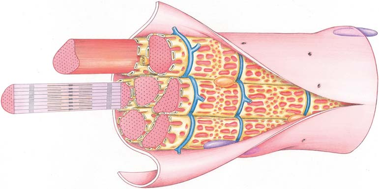